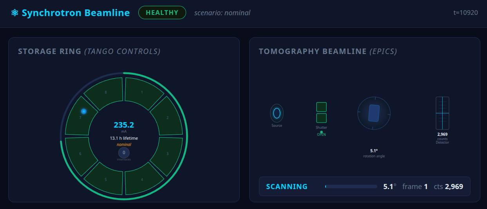

_shutter_open = None # must remember it yourself
def shutter_supervisor_loop():
global _shutter_open
while not _stop.is_set():
current = controller.read_attribute(
"BeamCurrent").value
ok = current >= MIN_BEAM_CURRENT
if ok != _shutter_open: # manual "changed?"
shutter_pv.put(1 if ok else 0)
_shutter_open = ok
time.sleep(1.0) # match every poller, by hand
threading.Thread(
target=shutter_supervisor_loop, daemon=True).start()join()s, and a second consumer of BeamCurrent
means a second poll, or a hand-rolled callback list.
# health: shared 1 Hz poll (facility.py: ring_health())
# every consumer subscribes to the same stream —
# there is no second poll to open.
supervisor_disp = health.pipe(
ops.map(lambda h: h.current >= MIN_BEAM_CURRENT),
ops.distinct_until_changed(),
ops.flat_map(lambda ok: write_pv(
PV_SHUTTER, 1 if ok else 0, ctx
)),
).subscribe(
on_next=lambda v: print(
"Shutter OPENED" if v else "Shutter CLOSED"
),
scheduler=scheduler,
).map = the ok = current >= ... line.
.distinct_until_changed() is the
if ok != _shutter_open check — no global required.
.flat_map(write_pv(...)) is the write. One-to-one, no new concepts.

python inject_fault.py beam_loss in a second terminal during a
scan: ring current falls below 50 mA — the bad marble, for real.
Shutter flips to CLOSED within one poll tick, scan pauses (gated on the same
health stream). inject_fault.py nominal reverses it —
no restart needed.
cd demo/synchrotron-beamline
docker compose up -d --build
python guarded_scan.py --ascii
# in a second terminal, trip the beam mid-scan:
python inject_fault.py beam_loss # shutter closes, scan pauses
python inject_fault.py nominal # shutter reopens, scan resumes